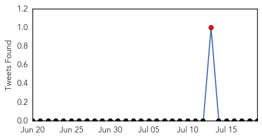
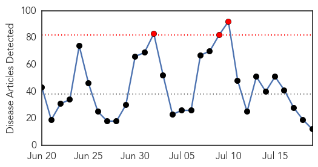
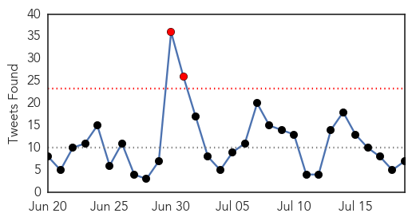
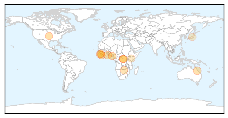
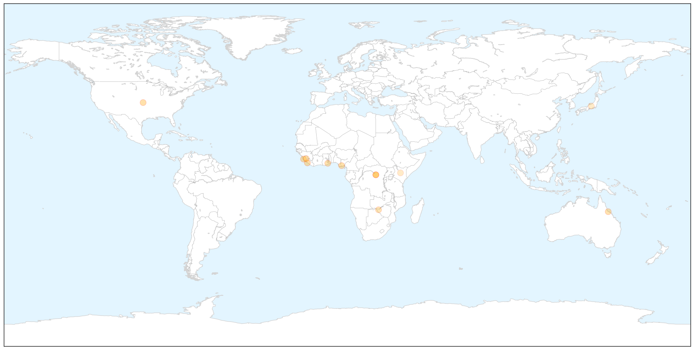
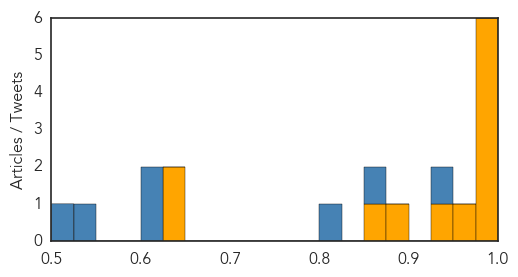

Chikungunya
30-Day Web Trend
1 alerts, 0 warnings

30-Day Twitter Trend
1 alerts, 0 warnings

Article Locations


Article Confidences

Top Articles:
-
No articles found for Jul 19, 2015
Top Tweets:
-
No tweets found for Jul 19, 2015
Ebola
30-Day Web Trend
3 alerts, 0 warnings

30-Day Twitter Trend
2 alerts, 0 warnings

Article Locations

X

Article Confidences
Top Articles:
- 0.999
- The Nigerian Ebola Story: The victors, the villains and the victims
- 0.999
- Avoid handshakes to limit infections – GMA warns
- 0.998
- Key protein pathways critical to Ebola virus can be blocked, according to new study
- 0.996
- Liberia Says 4 Remaining Ebola Patients Have Recovered — Naharnet
- 0.991
- Sierra Leone envoys in Makkah pray for Ebola eradication
- 0.985
- Aerosolized Vaccine Protects Primates Against Ebola
- 0.955
- Participants in Ebola vaccine trials would not contract virus
- 0.946
- the 'unsung heroes' taking part in trials
- 0.894
- EU pledges €450 million to Ebola affected countries
- 0.871
- Mugabe and Mnangagwa abandons duty; as pair goes globetrotting
- 0.648
- Uganda: 3 more Ebola cases detected
- 0.641
- Japan's disaster response teams to include specialists in infectious diseases
Top Tweets:
- 0.926
- FrontPageAfrica - Ebola Virus Outbreak Fighters Receive Golden Image Award - Front Page Africa http://t.co/VA5mpEM73A ebola EVD
- 0.872
- Sierra Leone envoys in Makkah pray for Ebola eradication - Yahoo! Maktoob News http://t.co/wMIwHrM7DV ebola EVD
- 0.808
- Key protein pathways critical to Ebola virus can be blocked according to new ... - Medical News Today http://t.co/PMv49FtwbF ebola EVD
- 0.610
- FrontPageAfrica - Ebola Virus Outbreak Fighters Receive Golden Image Award - Front Page Africa http://t.co/jr14hd8P33
- 0.606
- Tomato Ebola And Belated Intervention Syndrome - Leadership Newspapers http://t.co/zQold8T8Tt ebola EVD
- 0.534
- Ebola outbreak help extends from space - CBC.ca http://t.co/mTVtWIAW1O ebola EVD
- 0.513
- Japanese Government present's Ebola prevention facilities to Ghana - GhanaWeb http://t.co/Bmwsl0QfAC ebola EVD